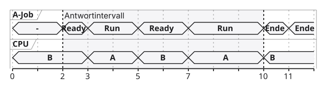
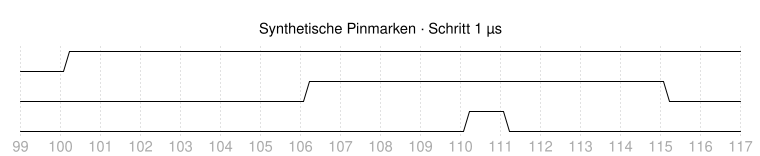
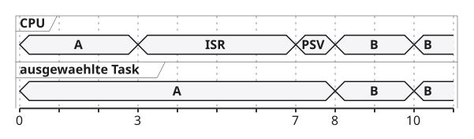

08 · Was geschieht wann?
Tracing und Timing-Analyse auf dem STM32H755
Eine Messfrage stellen, passende Ereignisse erfassen
Zeitgrößen berechnen und Beobachtereffekte erkennen
Papiermodelle und ein lokaler Zykluszählerversuch
Dieser Termin untersucht das Verhalten des Systems aus Vorlesung 7. Tracing bedeutet eine geordnete Aufzeichnung ausgewählter Ereignisse. Timing-Analyse untersucht, welche Zeiten zwischen definierten Ereignissen liegen und ob sie die Anforderungen erfüllen. Beide beginnen mit einer Frage, nicht mit einem Gerätefenster. Auf dem NUCLEO-H755ZI-Q betrachten wir weiterhin den Cortex-M7 mit Bare-Metal-Programm, also ohne Kernel, und den Cortex-M4 mit FreeRTOS, dem Echtzeitbetriebssystem.
Ein Messwert beantwortet nur die Frage, für die Anfang, Ende und Zeitquelle festgelegt wurden. Ein erfolgreicher Datenaustausch ist beispielsweise noch kein Nachweis seiner Abschlussfrist. Die Vorlesung führt deshalb zuerst einen Messvertrag und die bekannten Jobgrößen ein. Anschließend betrachten wir den lokalen Zykluszähler, begrenzte Ereignislogs und die Qualität ihrer Daten. Externe Tracegeräte sind eine Ergänzung; ihre Bedienung gehört nicht zur Pflichtübung. Die eigene kleine Implementierung wertet vorhandene Datensätze aus und zeigt ihren Erfolg über eine Board-LED, eine Light Emitting Diode oder Leuchtdiode. Modellzahlen bleiben von tatsächlichen Boardbeobachtungen getrennt.
Vorlesungen 1–7 sind die gemeinsame Grundlage
Job, Antwortzeit, Deadline
Welche Ereignisse begrenzen die Messung?
Ready, Running, Blocked
Läuft wirklich Taskcode?
Mutex und Queue
Was verändert ein zusätzliches Log?
Shared Memory, Cache, MPU
Welchen Zugriffsweg sehen wir?
Ein Job ist eine konkrete Aktivierung einer Task. Die Antwortzeit reicht von ihrer Freigabe bis zum geforderten Abschluss; die Deadline ist die zugehörige Frist. Ready bedeutet ausführungsbereit, Running laufend und Blocked auf eine Bedingung wartend. Ein Mutex ist eine Sperre mit Besitzer, eine Queue eine begrenzte Nachrichtenwarteschlange. Shared Memory bezeichnet gemeinsam erreichbaren Speicher. Die MPU, Memory Protection Unit oder Speicherschutzeinheit, beschreibt Rechte und Attribute eines Kerns; ein Cache hält lokale Kopien.
Diese Kenntnisse genügen für den Einstieg. Neu sind die Messdefinition, der Zykluszähler und die Tracequellen. Das Ping-Pong aus Vorlesung 7 liefert einen Datenvertrag mit den Antworten eins, drei und fünf. Heute fragen wir zusätzlich, welche Beobachtung diese Antworten oder ihre Zeiten tatsächlich belegt. Ein M7-Schreibereignis beweist beispielsweise noch nicht den vom M4 gelesenen Wert. Auch eine Taskliste beweist nicht jede frühere Zustandsänderung. Die folgenden Lernziele ordnen die neuen Verfahren nach ihrer Aussage.
Am Ende begründen Sie eine Messung
Anfang, Ende, Einheit und Bedingungen festlegen
Eigene Rechenzeit, Antwortzeit und Latenzen unterscheiden
Lokale Zähler mit Takt und Umlaufgrenze verwenden
Stichproben und gültige Ereignishistorien auswerten
Beobachtetes Maximum und begründete WCET unterscheiden
Eine Messung braucht zuerst ihre beiden Ereignisgrenzen und die Zeitbasis, also die Quelle und Skalierung ihrer Zeitwerte. Eigene Rechenzeit beschreibt die tatsächlich dem Job zugeordnete Prozessorarbeit. Antwortzeit umfasst auch Wartephasen. Latenz bezeichnet eine Verzögerung zwischen jeweils ausdrücklich benannten Ereignissen. Ein lokaler Zähler gehört zu einem Kern und ist keine automatisch gemeinsame Uhr.
Ein Ereignislog ist eine begrenzte Liste ausgewählter Zeitmarken. Eine Ereignishistorie, auch Trace genannt, ist nur für die tatsächlich erfassten Ereignisse aussagekräftig. WCET bedeutet Worst-Case Execution Time: eine begründete obere Schranke der eigenen Ausführungszeit unter benannten zulässigen Bedingungen. Das größte Ergebnis einiger Versuche ist dagegen zunächst nur das beobachtete Maximum dieser Versuche.
Das Lernziel ist eine begründete Aussage: Was wurde erfasst, welche Größe wurde daraus berechnet und wie weit gilt das Ergebnis? Für ein kurzes lokales Arbeitsintervall genügt häufig ein Zähler. Für eigene Taskarbeit braucht man zusätzlich die Ausführungszuordnung. Für eine Ende-zu-Ende-Reaktion braucht man Freigabe und geforderten Abschluss derselben Anfrage. Die Übung überprüft diese Entscheidungen mit Papierfällen und einer selbst geschriebenen kleinen Auswertung.
Vier Schulstunden: rechnen, messen, auswerten
1 · Messfrage und Zeitgrößen
25 Erklärung + 20 Papier 1–2
2 · Zähler und Beobachter
25 Erklärung + 20 Papier 3
3 · Evidenz und Datenqualität
25 Erklärung + 20 Papier 4
4 · Eigene Auswertung und Rückblick
30 Implementierung + 10 Quiz + 5 Abschluss
Vier Schulstunden entsprechen 180 Unterrichtsminuten. Die Tabelle umfasst fünfundsiebzig Minuten Erklärung, sechzig Minuten Papierarbeit, dreißig Minuten Implementierung sowie fünfzehn Minuten Quiz und Abschluss. Die achtundvierzig Folien sind unterschiedlich lange Arbeitsstationen. Ein Rechenbeispiel oder eine Arbeitsfolie bleibt länger sichtbar als eine kurze Orientierung. Die Papieraufgaben werden passend zu den drei ersten Blöcken unterbrochen und ausgewertet.
Die Lehrperson stellt die erprobte Dual-Core-Projektbasis aus den vorherigen Terminen bereit. Dual Core bedeutet zwei Prozessorkerne. Installation, erster Flashstart und Reparatur der Takt- oder Linkerdateien sind Vorbereitung. CubeMX konfiguriert die Firmware; VS Code mit der STM32 VS Code Extension baut und untersucht die beiden Ziele. Der lokale Zählerversuch läuft auf dem Cortex-M7. Die eigene Auswertung nutzt allein eine Board-LED, Light Emitting Diode oder Leuchtdiode, und gespeicherte Daten. Papieraufgaben und Musterlösungen bleiben ohne Hardware vollständig nachvollziehbar. Ein noch nicht funktionierendes Projekt wird außerhalb dieses Zeitplans eingerichtet; daraus werden keine erfundenen Messwerte abgeleitet.
Der Messvertrag kommt vor dem Werkzeug
Anfang / Ende
Zählerlesen vor / nach dem Arbeitsabschnitt
Quelle / Einheit
M7-CYCCNT, Kerntakte
Bedingungen
gleicher Build, stabiler Takt, kein Halt
Enthalten
Arbeit, Barrieren, laufende Unterbrechungen
Ausgeschlossen
späteres Speichern und Anzeigen des Logs
Ein Messvertrag legt fest, welche zwei Ereignisse eine Zahl begrenzen und unter welchen Bedingungen sie interpretiert wird. CYCCNT bedeutet Cycle Count, Zykluszählstand, im DWT-Baustein Data Watchpoint and Trace. M7 bezeichnet den Cortex-M7. Ein Build ist ein bestimmter übersetzter Programmstand. Eine Barriere ordnet beziehungsweise vervollständigt bestimmte Prozessorzugriffe.
Das Beispiel misst ein lokales Arbeitsintervall zwischen zwei Zählerlesungen. Es enthält auch die innerhalb liegenden Barrieren und Unterbrechungen, solange der Zähler weiterläuft. Das spätere Speichern in den Logpuffer liegt außerhalb. Damit ist die Zahl weder automatisch reine Rechenzeit der Funktion noch Antwortzeit eines Jobs ab Freigabe. Ein anderes Werkzeug kann andere Ereignisgrenzen sehen: Ein Logpaket kommt später beim Host an; ein GPIO-Messgerät sieht physische Pinflanken. GPIO bedeutet General-Purpose Input/Output, allgemeiner Ein- und Ausgang. Beide sind eigene Messverträge. Die folgenden Beobachtereffekte erklären, warum das Einfügen einer Marke selbst den gemessenen Ablauf beeinflussen kann.
Beobachtung kann Zeit und Reihenfolge verändern
Zusätzliche Befehle und Logs kosten Arbeit
Ausgabe und Sperren können Wartezeiten erzeugen
Ein anderes Layout verändert Cache und Speicherwege
Ein Debughalt verändert den Fortschritt anderer Teilnehmer
Ein voller Tracepuffer kann Daten verlieren
Ein Beobachtereffekt ist eine Veränderung des Systems durch das Verfahren, mit dem man es beobachtet. Ein Log ist eine gespeicherte Ereignisnotiz. Ein Cache ist ein lokaler Zwischenspeicher. Ein Tracepuffer speichert eine begrenzte Menge aufgezeichneter Ereignisse. Die Aussage beschreibt konkrete Software- und Hardwaremechanismen, kein allgemeines physikalisches Gesetz für jede Messung.
Ein zusätzlicher Funktionsaufruf kann einen knappen Job verlängern. Eine Ausgabe kann einen Mutex erwerben oder auf Pufferplatz warten und dadurch die Reihenfolge konkurrierender Tasks ändern. Veränderte Codeadressen können andere Cachezeilen benutzen. Ein angehaltener Kern lässt unter Umständen die Gegenstelle weiterlaufen. Ein verlustbehafteter Trace lässt wiederum einen Teil der tatsächlichen Ereignisse unsichtbar werden. Diese Fälle haben verschiedene Ursachen. Man reduziert den Einfluss durch kurze definierte Marken, begrenzte Puffer und Ausgabe nach dem Messfenster, prüft ihn aber weiterhin. Eine Beobachtung ohne zusätzliche Anwendungsbefehle kann ein Vorteil sein; sie beseitigt nicht die Anforderungen an Datenqualität und Zeitquelle.
„Status“: Leitungszeit vollständig nachrechnen
Lehrannahme: sechs ASCII-Bytes, kein Zeilenumbruch, UART 8N1.
\[N_{Bit}=6\cdot(1+8+1)=60\]
\[t_{Leitung}=\frac{60}{115200}\,\mathrm{s}\approx521\,\text{µs}\]
Das ist die Leitungsdauer, noch keine CPU-Zeit von printf.
UART bedeutet Universal Asynchronous Receiver/Transmitter, asynchrone serielle Sende- und Empfangsschnittstelle. ASCII ist eine Zeichenkodierung; die sechs Zeichen von Status sind hier sechs Bytes. 8N1 bedeutet acht Datenbits, keine Parität und ein Stopbit. Zusammen mit dem Startbit ergeben sich zehn Leitungsbits je Byte. Der Nullterminator einer C-Zeichenkette wird in diesem Lehrfall nicht übertragen, ebenso kein Zeilenumbruch.
N Bit bezeichnet die Bitzahl, t Leitung die reine Übertragungsdauer. Sechs mal zehn sind sechzig Bits. Geteilt durch 115200 Bits je Sekunde sind das 0,0005208333 Sekunden oder etwa 521 Mikrosekunden. µs bedeutet Mikrosekunden. CPU, Central Processing Unit oder Prozessor, bezeichnet eine andere Ressource. printf ist die formatierende C-Ausgabefunktion. Wie lange sie den Prozessor bindet oder blockiert, hängt von Formatierung, Treiber, Sperren und Ausgabeweg ab. Die Rechnung ist eine didaktische Leitungsannahme, keine Boardmessung und kein allgemeiner Worst Case jeder Ausgabe. Die nächste Folie trennt die möglichen Prozessorbelegungen.
Gleiche UART-Leitung, verschiedene CPU-Belegung
Polling
CPU wartet aktiv auf den Sender
Interrupt
Treiberarbeit bei Sendeereignissen
DMA
Start und Abschluss, Hardware überträgt
Lehrfall: 10 µs Arbeit + 521 µs blockierende Ausgabe ≈ 531 µs.
Eine Deadline von 50 µs wird in diesem Modell verletzt.
UART ist die Universal Asynchronous Receiver/Transmitter-Schnittstelle, eine serielle Leitung. CPU bedeutet Central Processing Unit, Prozessor. DMA bedeutet Direct Memory Access, direkten Hardware-Speicherzugriff. Polling ist wiederholtes Prüfen einer Bedingung durch das Programm. Eine Interruptausgabe nutzt Behandler für Sendeereignisse; eine DMA-Ausgabe lässt Hardware den vorbereiteten Puffer übertragen.
Alle drei Wege können dieselbe Leitungszeit haben, während ihre Prozessorbelegung verschieden ist. DMA macht Formatierung, Pufferlebensdauer und Abschlussbehandlung nicht kostenlos. Auch ein interruptgesteuerter Treiber kann die aufrufende Task auf freien Platz warten lassen. Im ausdrücklich vereinfachten Lehrfall blockiert die Ausgabe den kritischen Ablauf für die volle Leitungsdauer. Zehn Mikrosekunden Arbeit plus gerundet 521 Mikrosekunden Ausgabe ergeben gerundet 531 Mikrosekunden. Gegen eine angenommene Deadline von fünfzig Mikrosekunden ist das zu spät. Eine Fristverletzung ist ein verpasster Abschluss, kein zwangsläufiger Absturz. Die Ausgabe gehört daher nach das zeitkritische Messfenster oder braucht einen passenden begrenzten Vertrag.
Ein Breakpoint hält einen Kern an
Gegenstelle, DMA und Peripherie können weiterlaufen
Freeze hängt vom passenden DBGMCU-Register ab
Ein Pending-Bit zählt nicht unbegrenzt viele Flanken
Begrenzte Puffer können während des Halts überlaufen
Resume stellt verlorene Ereignisse nicht wieder her
Ein Breakpoint ist ein Haltepunkt im Debugger; Resume setzt die Ausführung fort. DMA bedeutet Direct Memory Access, direkten Hardware-Speicherzugriff. DBGMCU bezeichnet den STM32-Debug-Unterstützungsblock. Freeze bedeutet das konfigurierbare Einfrieren bestimmter Peripheriefunktionen. Pending bedeutet eine noch anstehende Interruptanforderung.
Wenn der M7 an einem Haltepunkt steht, kann der M4 weiterarbeiten. Ein Timer kann ebenfalls weiterlaufen, sofern seine Freeze-Konfiguration ihn nicht anhält. Welche Komponenten betroffen sind, wird am Projekt geprüft. Ein Pending-Bit zeigt, dass eine Anforderung anliegt; es ist keine unbegrenzte Liste aller eingetroffenen Flanken. Eine Peripherie kann zusätzliche Zähler oder begrenzte FIFOs besitzen. FIFO bedeutet First In, First Out, Reihenfolge nach Eingang. Deren tatsächliche Kapazität entscheidet über erhaltene Daten. Viele externe Flanken erzeugen während des Halts nicht automatisch viele verschachtelte Behandler-Stackframes. Nach Resume bleibt nur das rekonstruierbar, was noch gespeichert ist. Ein Datenlauf unter solchen Halten belegt deshalb keinen unveränderten Echtzeitablauf.
Ein verschwundener Fehler ist noch keine Diagnose
Heisenbug: Beobachtung verändert das Auftreten eines Fehlers.
Race
verändert die Reihenfolge ungeschützter Zugriffe
Prioritätsinversion
verändert Besitz- und Verdrängungszeiten
Cachefehler
verändert Layout oder Cacheverdrängung
Erst eine begründete Hypothese macht daraus eine Diagnose.
Heisenbug bezeichnet einen Fehler, dessen beobachtetes Auftreten sich durch Debugging oder Instrumentierung verändert. Eine Race ist eine unerlaubt verschränkte Zugriffsfolge ohne gültigen Schutzvertrag. Prioritätsinversion bedeutet, dass eine hohe Aufgabe auf eine Ressource einer niedrigeren wartet und weitere Arbeit den Besitzer verzögern kann. Ein Cache hält lokale Speicherzeilen; deren Verdrängung kann geänderte Daten später sichtbar machen.
Die Mechanismen bleiben getrennt. Ein Log kann zwei Schreibzugriffe auseinanderziehen und eine Race verdecken. Es kann einen niedrigen Mutexbesitzer länger oder kürzer laufen lassen und dadurch eine Inversion verändern. Es kann zusätzliche Speicherzugriffe erzeugen und eine Dirty-Zeile, also eine lokal veränderte Zeile, zurückschreiben lassen. Dass der Fehler mit dem Debugger verschwindet, beweist keine dieser Ursachen. Die Diagnose vergleicht gezielt Bedingungen und erfasst die dazu passende Spur. Für den Cachefall bleiben Adresse, Besitz und effektive Attribute aus Vorlesung 7 zuerst zu prüfen. Der nächste Messweg bietet kurze Marken, aber auch diese brauchen einen ausdrücklich definierten Endpunkt.
GPIO zeigt physische Pinflanken
Messfenster: steigende bis fallende Flanke am geprüften Pin.
Setzen und Rücksetzen sind zusätzliche Anwendungsarbeit
Interrupts zwischen den Marken gehören zum Intervall
Bus, Pad und Messgerät beeinflussen die beobachtete Kante
Pinbesitz und gemeinsames Register bleiben zu prüfen
Das ist keine automatische Store-zu-Store-Messung
GPIO bedeutet General-Purpose Input/Output, allgemeiner Ein- und Ausgang. Ein Store ist ein Prozessor-Schreibzugriff. Das Pad ist der physische Anschluss mit seinen elektrischen Eigenschaften. Ein Messgerät sieht die physische Flanke am Pin und nicht unmittelbar den internen Storezeitpunkt. Auflösung bezeichnet die kleinste unterscheidbare Zeitstufe des Geräts.
Das Programm setzt vor der Arbeit einen ausgewählten Pin und setzt ihn danach zurück. Zwischen beiden Flanken können Interrupts oder andere Verdrängungen liegen; diese gehören zur beobachteten Pulsbreite. Auch der Weg zum GPIO-Register und zum Pad beeinflusst die Kante. Ein direkter BSRR-Zugriff, Bit Set/Reset Register, kann einen Pin ohne Read-Modify-Write des Ausgaberegisters ändern. Er löst aber nicht jeden gemeinsamen Konfigurationskonflikt. Wie in Vorlesung 7 wird die Portzuständigkeit vorher geprüft. Für die Pflichtübung verwenden wir den lokalen Zähler, sodass kein unbestätigter Messpin erforderlich ist. Eine zusätzliche GPIO-Messung bleibt ein gesonderter, am Board eingerichteter Messvertrag.
Wählen Sie die Quelle zur Frage
Wie breit ist ein physischer Puls?
GPIO und Messgerät
Wie viele Kerntakte liegen zwischen zwei Lesungen?
lokaler CYCCNT
Welche Ereignisse wurden ausgeführt?
begrenztes Softwarelog / ITM
Welche Task lief und wann?
Trace plus Kernelzuordnung
Welchen Kontrollfluss nahm der Kern?
passender ETM-Pfad
GPIO bedeutet General-Purpose Input/Output, allgemeiner Ein- und Ausgang. CYCCNT ist der lokale Cycle Count, Zykluszählstand. ITM bedeutet Instrumentation Trace Macrocell und nimmt unter anderem Softwareereignisse auf. ETM bedeutet Embedded Trace Macrocell und unterstützt die Rekonstruktion des Kontrollflusses. Ein Kernel verwaltet die Tasks und ihre Zustände.
Die Tabelle ordnet Verfahren nach der gewünschten Aussage. Ein GPIO-Puls eignet sich für ein physisches Intervall. Ein Zykluszähler erfasst ein lokales Zeitfenster in Kerntakten. Ein Softwarelog oder ITM-Marker liefert ausgewählte Ereignisse, aber keine beliebige Vergangenheit. Die Darstellung einer Task benötigt Informationen über Kernelobjekte und Ausführungskontexte. ETM betrachtet wiederum den Maschinenkontrollfluss eines Kerns. Keine dieser Quellen ist automatisch die beste für jede Frage. Auch innerhalb derselben Quelle entscheidet die Grenze: Funktionsbeginn bis Rückkehr ist etwas anderes als Jobfreigabe bis Fertigstellung. Bevor wir die Qualität einer Ereignishistorie betrachten, rechnen wir deshalb die bereits bekannten Jobgrößen mit vollständigen Ereignissen nach.
Ein Job hat vier getrennte Zeitmarken
\(r\) Freigabe
\(s\) Beginn eigener Ausführung
\(f\) geforderter Abschluss
\(d=r+D\) absolute Deadline
\[R=f-r,\qquad\text{Slack}=d-f\]
Ein Job ist eine konkrete Aktivierung einer Task. r bezeichnet die Freigabe, s den Beginn ihrer eigenen Ausführung, f den geforderten Abschluss. D ist die relative Deadline, also das erlaubte Zeitbudget ab Freigabe. d gleich r plus D bezeichnet die absolute Frist. R gleich f minus r ist die Antwortzeit. Slack gleich d minus f bedeutet verbleibendes Abschlussbudget; ein negativer Wert verletzt diese Frist.
Die Einheiten müssen innerhalb einer Rechnung übereinstimmen, beispielsweise Millisekunden für alle Marken. Der Start s liegt möglicherweise nach der Freigabe r. Später kann der Job nochmals verdrängt werden. Seine Antwortzeit enthält diese Wartephasen, seine eigene Prozessorzeit nicht. Die Grenze f ist eine Anforderung: Eine Nachricht zu senden ist beispielsweise ein anderer Abschluss als eine physische Reaktion am Ausgang. Eine Task kann nach f weiterleben und später einen neuen Job bearbeiten. Ein Running-Profil allein enthält Freigabe und Deadline nicht automatisch. Dafür werden passende Ereignisse zusätzlich definiert. Das folgende Lehrdiagramm macht diese Unterschiede konkret.
Ein Job wird bereit, läuft und wird verdrängt
Synthetisches Ein-Kern-Modell in ms; Kontextwechselkosten hier null.

Die Abbildung ist ein synthetisches Schedulingmodell, keine Traceaufnahme. Scheduling bedeutet die Auswahl der laufenden Aufgabe. CPU ist die Central Processing Unit, der Prozessor. Ready bedeutet ausführungsbereit, Running laufend. Die obere Spur zeigt den Zustand des Jobs A, die untere die Prozessorzuordnung. Run steht für Running; B bezeichnet hier fremde Arbeit, der Strich den noch nicht freigegebenen Job. Die waagerechte Achse zählt Millisekunden. Der hervorgehobene Bereich reicht von Freigabe zwei bis Abschluss zehn; die absolute Deadline liegt bei elf.
A wird bei zwei Millisekunden bereit und beginnt bei drei. Von drei bis fünf arbeitet A zwei Millisekunden. Von fünf bis sieben erledigt der Prozessor fremde Arbeit; A bleibt bereit und wird verdrängt. Von sieben bis zehn arbeitet A weitere drei Millisekunden und ist danach fertig. Ende bezeichnet den Abschluss dieses Jobs, nicht das Löschen seiner Task. Kontextwechselkosten sind hier null gesetzt. Das reale System hätte zusätzliche Kosten oder bereits darin enthaltene Intervalle. Der Zustand Ready allein ist keine eigene Prozessorarbeit. Auf der nächsten Folie werden dieselben Kanten zu drei verschiedenen Größen zusammengesetzt.
Drei Größen aus derselben Spur
Lehrspur: \(r=2\) , \(s=3\) , \(f=10\) , \(d=11\) ms.
\[C_{eigene}=(5-3)+(10-7)=5\,\mathrm{ms}\]
\[R=10-2=8\,\mathrm{ms},\quad\text{Slack}=11-10=1\,\mathrm{ms}\]
Anfangswarten 1 + Verdrängung 2 + eigene Arbeit 5 = Antwortzeit 8 ms.
C eigene bezeichnet die dem Modelljob zugeordnete Prozessorarbeit, keine allgemeine Worst-Case-Schranke. r ist Freigabe, s erster Start, f Abschluss und d die absolute Deadline. R ist Antwortzeit, Slack das verbleibende Abschlussbudget. ms bedeutet Millisekunden. Die relative Deadline beträgt hier D gleich neun Millisekunden, weil elf minus zwei gleich neun ist. Alle Zahlen stammen aus der synthetischen Spur der vorherigen Folie; Kontextwechselkosten sind dort null.
Die eigene Arbeit liegt in zwei getrennten Running-Abschnitten: fünf minus drei gleich zwei und zehn minus sieben gleich drei. Zusammen sind das fünf Millisekunden. Die Antwortzeit beginnt bei Freigabe zwei und endet bei zehn, also acht Millisekunden. Bis zur Deadline elf bleibt eine Millisekunde. Zur Kontrolle erhält man dieselben acht aus einer Millisekunde Anfangswarten, zwei Millisekunden Verdrängung und fünf Millisekunden Arbeit. Das gesamte Nichtlaufen innerhalb der Antwortzeit beträgt damit drei Millisekunden.
Fremde Prozessorarbeit gehört nicht zur eigenen Arbeit von A. Der Funktionsabstand vom ersten Start drei bis Abschluss zehn wäre sieben Millisekunden und enthielte die zweimillisekündige Verdrängung. Er wäre zugleich kürzer als die Antwortzeit, weil das Anfangswarten fehlt. Der Begriff Laufzeit ohne weitere Grenze wäre deshalb mehrdeutig. Diese Unterscheidung ist entscheidend, bevor Messergebnisse für einen Fristvergleich verwendet werden.
Eine Lücke darf nicht als laufende Zeit zählen
A läuft 3–5 und 7–10 ms, vollständig
5 ms eigene Arbeit
Abschnitt 5–7 ms fehlt
dort ist die Zuordnung unbekannt
Freigabe fehlt
Antwortzeit nicht vollständig bestimmbar
neuer Abschnitt nach bestätigter Sync
getrennt auswertbar
Eine Gerade über eine Lücke wäre eine erfundene Historie.
Sync steht für Synchronisation der Traceaufnahme und ihrer Dekodierung. Eine Traceaufnahme ist eine geordnete Ereignishistorie einer ausgewählten Quelle. Die Zuordnung eines Intervalls zu Task A setzt gültige Grenzen und den Ausführungskontext voraus. ms sind Millisekunden. Die Tabelle verwendet die vorherige Lehrspur, verändert aber ihre Vollständigkeit.
Wenn beide Running-Abschnitte vollständig bekannt sind, beträgt die eigene Arbeit fünf Millisekunden. Fehlt dagegen ein Abschnitt, weiß man dort nicht, welche Aufgabe oder Exception lief. Eine grafisch durchgezogene Linie ersetzt dieses Wissen nicht. Fehlt die Freigabe, kann man eventuell einen Funktionsabstand bestimmen, aber keine vollständige Jobantwortzeit ab der Freigabemarke r. Nach bestätigter neuer Synchronisation und Kontextzuordnung kann ein späterer Abschnitt separat gültig sein. Man muss nicht zwangsläufig jede spätere Aufnahme verwerfen. Die Lücke selbst bleibt dennoch unbekannt und darf nicht mit angenommener Taskarbeit in eine Summe eigener Ausführungsabschnitte eingehen. Sind Freigabe und Abschluss desselben Jobs mit verlässlichen Zeitmarken und durchgehender Zeitbasis erhalten, bleibt ihre Differenz als Antwortzeit trotz fehlender Zwischenereignisse berechenbar. Die eigene Prozessorarbeit lässt sich daraus weiterhin nicht rekonstruieren. Diese Regel ist unabhängig davon, ob der Verlust im Zielpuffer, im Transport oder bei der Dekodierung entstanden ist.
Flanke, ISR und Veröffentlichung sind verschiedene Marken
Lehrspur mit gemeinsamer Modelluhr. Spuren von oben: Ereignis, ISR-Marker, Publikation.

ISR bedeutet Interrupt Service Routine, Interruptbehandler. Die Abbildung zeigt synthetische digitale Markersignale, keine Aufnahme des Boards. HIGH und LOW sind die beiden Signalpegel. Die waagerechte Achse beginnt bei 99 Mikrosekunden, jeder Schritt entspricht einer Mikrosekunde, µs. Die Ereignisflanke liegt bei 100, der ISR-Marker steigt bei 106 und fällt bei 115. Der Publikationsmarker steigt bei 110 und fällt im nächsten Schritt.
Die Signalnamen stehen für die gewählten physischen Beobachtungsmarken. Die steigende ISR-Marke definiert in diesem Modell den Eintritt, die fallende den Austritt. Die Veröffentlichung liegt somit innerhalb des genau neun Mikrosekunden langen ISR-Intervalls von 106 bis 115. Die Eintrittsverzögerung beträgt sechs Mikrosekunden ab Flanke 100. Ein wirklicher GPIO-Marker, General-Purpose Input/Output, hätte eigene Kosten und einen Weg zum Pin; diese Lehrspur abstrahiert davon. Taskbereitstellung, Taskstart und Reaktion kommen als weitere Marken hinzu. Die vollständige Tabelle der nächsten Folie verhindert, dass überlappende Abschnitte fälschlich addiert werden.
Die Interruptkette ohne doppelte Zeitanteile
Flanke / ISR-Eintritt
100 / 106
Veröffentlichung / Task Ready
110 / 111
ISR-Ende / Taskstart
115 / 120
geforderte Reaktion
128
Eintritt 6 · ISR-Intervall 9 · Ready-Warten 9 · Gesamtreaktion 28 µs.
Disjunkte Summe: 6 + 4 + 1 + 9 + 8 = 28 µs.
ISR bedeutet Interrupt Service Routine, Interruptbehandler. Ready heißt ausführungsbereit. µs sind Mikrosekunden. Alle Marken gehören zu derselben synthetischen Zeitbasis, nicht zu unterschiedlichen unkorrelierten Uhren. Die Eintrittsverzögerung ist 106 minus 100 gleich sechs. Das ISR-Intervall ist 115 minus 106 gleich neun. Ready bis Taskstart ist 120 minus 111 ebenfalls neun. Die Gesamtreaktion ist 128 minus 100 gleich achtundzwanzig Mikrosekunden.
Diese vier Kennzahlen darf man nicht gemeinsam aufsummieren. Das Ready-Warten von 111 bis 120 überlappt den noch laufenden ISR-Abschnitt bis 115. Eine disjunkte Zerlegung benutzt dagegen Flanke bis Eintritt sechs, Eintritt bis Veröffentlichung vier, Veröffentlichung bis Ready eins, Ready bis Start neun und Start bis Reaktion acht. Zusammen ergeben sie achtundzwanzig. Die volle ISR-Dauer kommt nicht nochmals hinzu. Der Taskstart bei 120 ist außerdem noch nicht die Reaktion bei 128. Ein Kontextwechselanteil müsste mit eigenen passenden Kanten eingeordnet werden. Ein synthetischer einzelner Verlauf ist keine obere Schranke jeder Interruptantwort.
Kerntakte werden erst mit dem Takt zu Zeit
Lehrfrequenzen, keine bestätigte Boardkonfiguration:
\[t=\frac{\Delta c}{f_{Kern}}\]
1000 Takte
400 MHz
2,5 µs
1000 Takte
200 MHz
5 µs
Takte sind keine Instruktionszahl; tatsächlichen Clock-Tree prüfen.
Delta c bezeichnet die Zählerdifferenz in Kerntakten, f Kern die bestätigte Kernfrequenz in Takten je Sekunde. t ist das daraus berechnete Intervall in Sekunden. MHz bedeutet Megahertz, Millionen Takte je Sekunde; µs sind Mikrosekunden. Der Clock-Tree beschreibt die tatsächliche Taktkonfiguration mit Quellen und Teilern.
Tausend geteilt durch vierhundert Millionen ergeben 0,0000025 Sekunden, also 2,5 Mikrosekunden. Bei zweihundert Millionen ergeben dieselben tausend Takte fünf Mikrosekunden. Beide Frequenzen sind didaktische Rechenannahmen, keine Einstellung des Laborboards. Der Cortex-M7 und der Cortex-M4 können verschiedene Frequenzen und lokale Zähler haben. Auch auf einem Kern bedeutet ein Takt nicht zwangsläufig eine vollständig abgearbeitete Instruktion: Pipeline, Speicher und Mehrzyklusoperationen verändern die Zuordnung. Für eine Zeitaussage müssen Frequenz und Zählerlauf während des ganzen Intervalls passen. Eine Frequenzanzeige im Hostprogramm allein liefert diese Bedingungen nicht. Die nächste Folie erklärt, weshalb zwei Kerne damit noch keine gemeinsame Uhr besitzen.
Zwei lokale Zähler sind noch keine gemeinsame Uhr
Unterschiedliche Startwerte und Rücksetzungen sind möglich
Kernfrequenzen können verschieden sein
Halt und Sleep können den Zählerlauf verändern
Zwei getrennte Aufnahmen belegen keine Inter-Core-Differenz
Gemeinsame Zeitbasis oder bestätigte Korrelation erforderlich
Inter Core bedeutet zwischen Prozessorkernen. Korrelation ist eine bestätigte Beziehung ihrer Zeitmarken, beispielsweise durch eine gemeinsame Aufnahmeuhr und zugeordnete Ereignisse. Sleep bezeichnet einen Energiesparzustand, Halt den Debughalt. Ein lokaler Zykluszähler zählt die dafür vorgesehenen Kerntakte und ist keine automatisch synchronisierte Systemzeit.
Selbst zwei gleichzeitig angezeigte Werte sind nicht direkt subtrahierbar. Ihr Nullpunkt kann verschieden sein; sie können mit unterschiedlichen Frequenzen laufen oder in bestimmten Zuständen stehen bleiben. Erst eine gemeinsame Skalierung und ein bestätigter Bezug der Nullpunkte erlauben eine Inter-Core-Zeitaussage. Zwei getrennte Traceaufnahmen sind noch keine solche Korrelation. Für ein kurzes M7-Fenster verwendet die Pflichtübung deshalb ausschließlich denselben M7-Zähler für Anfang und Ende. Sie misst weder eine Einweglatenz vom M7 zum M4 noch automatisch einen vollständigen Ping-Pong-Roundtrip. Ein gleichzeitig korrelierter Trace beider Kerne ist ein zusätzlicher, am tatsächlichen Gerät bestätigter Aufnahmeweg. Zuvor muss auch der endliche Zahlenbereich eines lokalen Zählers berücksichtigt werden.
32 Bit: ein Umlauf ist endlich
Lehrbeispiel:
uint32_t before = 0xFFFFFFF0 u ; uint32_t after = 0x00000050 u ; uint32_t delta = after - before; /* 96 modulo 2^32 */ \[T_{Umlauf}=\frac{2^{32}}{240\cdot10^6}\,\mathrm{s}\approx17{,}8957\,\mathrm{s}\]
Die Zeitumrechnung gilt nur für ein Intervall kürzer als einen Umlauf.
uint32_t ist ein vorzeichenloser 32-Bit-C-Typ. before und after sind zwei Stände desselben lokalen Zählers; delta ist ihre Differenz. Vorzeichenlose Rechnung erfolgt modulo zwei hoch zweiunddreißig. Bis zum nächsten Umlauf fehlen ab der Startmarke sechzehn Takte; die Endmarke liegt achtzig Takte nach diesem Umlauf. Die Differenz ist deshalb sechsundneunzig, obwohl der zweite Zahlenwert kleiner aussieht.
T Umlauf ist die Zeit einer vollständigen Zählerperiode. Zwei hoch zweiunddreißig sind 4294967296 Takte. Bei der hypothetischen stabilen Frequenz von zweihundertvierzig Millionen Takten je Sekunde sind das etwa 17,89569707 Sekunden. Die sechsundneunzig Takte entsprechen dann 0,4 Mikrosekunden. Die Differenz allein kann nicht erkennen, ob zusätzlich ein vollständiger Umlauf oder mehrere vergangen sind. Ein längeres unbekanntes Intervall hat denselben Restwert. Das Programm muss daher eine bekannte kürzere Beobachtungsdauer und fortlaufende Zeitbasis voraussetzen. Bei Debughalt, Sleep oder Taktwechsel entfällt diese einfache Zeitdeutung. Die Referenz benennt das Feld ausdrücklich als Modulo-Differenz.
CYCCNT zählt ein Intervall, nicht nur die Funktion
DWT-CYCCNT ist der lokale Zykluszähler
Interruptarbeit innerhalb des Fensters kann mitgezählt werden
Fremde Taskausführung kann bei fortlaufendem Zähler mitgezählt werden
Halt, Sleep und Taktwechsel benötigen eine andere Bewertung
Reine Job-CPU-Zeit braucht gültige Ausführungszuordnung
DWT bedeutet Data Watchpoint and Trace. CYCCNT bedeutet Cycle Count, Zykluszählstand. CPU ist die Central Processing Unit, der Prozessor. Ein Job ist eine konkrete Taskaktivierung. Sleep bezeichnet einen Energiesparzustand. Die Folie trennt die verstrichenen gezählten Takte eines Fensters von der ausschließlich dem Job zugeordneten Arbeit.
Angenommen, eine Funktion beginnt vor einem Interrupt und kehrt erst nach dessen Behandler zurück. Wenn der Zähler währenddessen läuft, liegt die Behandlerzeit zwischen beiden Lesungen. Auf einem Kernelkern kann außerdem eine andere Task innerhalb des Fensters ausgeführt werden. Die Zählerdifferenz ist dann keine reine Funktions-CPU-Zeit. Für diese Größe müssen gültige Running-Abschnitte der richtigen Task zusammengezählt und Exceptions getrennt zugeordnet werden. Im Labor läuft das Zählermodul auf dem Bare-Metal-M7, aber auch dort können Interrupts das Fenster verlängern. Der M4 kann zusätzlich gemeinsame Ressourcen belasten. Die Auswertung nennt deshalb Messfenster, Last und Bedingungen. Sie deaktiviert nicht ungeprüft Interrupts, um aus einer anderen Ausführung scheinbar die ursprüngliche Zeit zu machen.
Den Zähler einmal initialisieren und seinen Lauf prüfen
CM7-Referenz: Lab08_Init(SystemCoreClock).
tatsächliche Kernfrequenz bestätigen und aktualisieren
vorhandene Initialisierung des Zählers verwenden
zwei Lesungen mit kurzer bekannter Zwischenarbeit vergleichen
bei fehlendem Fortschritt abbrechen
Zähler nicht während der Messreihe zurücksetzen
CM7 bezeichnet das Cortex-M7-Ziel. SystemCoreClock ist die Variable der Common Microcontroller Software Interface Standard-Schnittstelle, kurz CMSIS, für die aktuelle Kernfrequenz. Die vorhandene Funktion Lab08_Init initialisiert den lokalen Zykluszähler. Das Ziel dieser Folie ist die Startprüfung; die Registerbelegung wird nicht als auswendig zu lernende Werkzeugschulung behandelt.
Die vollständige Referenz prüft einen von null verschiedenen Frequenzwert und seine Übereinstimmung mit der aktualisierten Variable. Sie aktiviert den vorgesehenen Zähler, prüft seine Unterstützung und vergleicht zwei Lesungen mit 128 NOP-Befehlen dazwischen. NOP bedeutet No Operation, ein Befehl ohne eigene Anwendungswirkung. Gleiche Werte melden fehlenden Fortschritt. Das ist eine Startprüfung, kein dauernder Beweis störungsfreien Zählerlaufs.
Die Routine setzt den Zählstand nicht auf null. Ein angeschlossenes Debugwerkzeug darf ihn während der Aufnahme ebenfalls nicht zurücksetzen oder anders konfigurieren. Die tatsächliche Taktkonfiguration wird am vorbereiteten Projekt geprüft; eine numerisch passende Frequenzvariable allein beweist nicht jeden Hardwareteiler. Schlägt die Startprüfung fehl, wird die technische Ursache geklärt. Null Takte werden nicht als besonders schnelle Arbeit ausgegeben. Nach erfolgreicher Prüfung bleibt die leere Messanordnung selbst als Einfluss zu untersuchen.
Eine leere Messung hat ebenfalls Kosten
Leeres und Arbeitsfenster benutzen dieselben Marken.
Zählerlesungen und Barrieren gehören zur Messanordnung
Auch ein leeres Fenster kann Takte enthalten
Mehrere Wiederholungen zeigen Streuung
Leerwert getrennt berichten
Subtraktion liefert keine automatische reine WCET
Eine Barriere ist ein Prozessorbefehl zur Ordnung oder Vervollständigung bestimmter Zugriffe. WCET bedeutet Worst-Case Execution Time, begründete obere Ausführungszeitschranke unter festgelegten Annahmen. Ein Leerfenster enthält dieselben Zeitmarken und Barrieren wie das Arbeitsfenster, jedoch nicht die synthetische Arbeit dazwischen.
Auch Zählerlesen, Barrieren und der Kontrollpfad benötigen Arbeit. Die unveränderte Referenz zeichnet daher sieben Leerfenster und sieben Arbeitsfenster auf; die eigene Programmieraufgabe konfiguriert fünf je Art. Unterschiedliche Resultate können aus Interrupts, Pipeline- und Cachezuständen sowie weiteren Bedingungen entstehen. Man berichtet die beiden Gruppen separat mit ihrer Anzahl und ihren Extremwerten. Leerwertsubtraktion kann unter kontrollierten Bedingungen eine Abschätzung des Instrumentierungsanteils unterstützen. Sie entfernt jedoch nicht automatisch wechselnde Störungen oder macht aus dem Ergebnis reine Jobarbeit. Die leere und die arbeitende Variante können beispielsweise verschiedene Speicherzustände besitzen. Das Modul benutzt deshalb keine eingebauten Mikrosekunden-Sollwerte und keine automatische Bereinigung. Die einfache Stichprobe der folgenden Folie zeigt, welche Zahlen man aus beobachteten Werten tatsächlich ableiten darf.
Eine Stichprobe liefert ein beobachtetes Maximum
Synthetische Intervalle: 12, 15, 14 und 18 µs.
\[t_{min}=12,\quad t_{max,beob}=18,\quad\bar t=\frac{59}{4}=14{,}75\,\text{µs}\]
Anzahl: vier gültige Beobachtungen
Eingaben, Last, Build und Auflösung gehören dazu
Ein unbekannter zulässiger Fall kann länger dauern
Dieses Maximum ist noch kein \(C_i\) für einen Schedulingbeweis
t min ist das Minimum der Stichprobe, t max beob das größte beobachtete Intervall und t quer ihr arithmetischer Mittelwert. µs bedeutet Mikrosekunden. Die Zahlen sind synthetische Lehrwerte, keine Messung des STM32. Zwölf plus fünfzehn plus vierzehn plus achtzehn sind neunundfünfzig; geteilt durch vier ergibt das 14,75. Der kleinste Wert ist zwölf, der größte achtzehn.
WCET bedeutet Worst-Case Execution Time, eine obere Schranke für alle zulässigen Ausführungen unter benannten Annahmen. Die vier Beobachtungen schließen ungetestete Eingaben, Pfade, Speicherzustände oder Lastfälle nicht ein. Auch ein größerer Stichprobenumfang ersetzt diese Begründung nicht automatisch. C i ist der konservative eigene Ausführungsbedarf einer Aufgabe aus den Schedulingmodellen der früheren Vorlesungen. Ein beobachtetes Funktionsintervall mit Unterbrechungen und unbekannten Pfaden wird nicht ungeprüft als diese Größe eingesetzt. Gültige Beobachtungen müssen außerdem vollständige Grenzen und eine passende Zeitbasis haben. Datenqualität ist damit Teil der Rechnung, nicht nur ein nachträglicher Kommentar zum Diagramm.
Welche zulässigen Fälle fehlen in der Stichprobe?
Lehrfall: Ein Algorithmus verarbeitet Listen mit 1 bis 100 Elementen.
vier Läufe mit je einem Element
diese vier konkreten Abläufe
alle Listenlängen einmal
weitere konkrete Abläufe
größter beobachteter Wert
Maximum der gültigen Stichprobe
Datenabhängige Pfade, Speicherzustände und Konkurrenz bleiben zu begründen.
Die vorherige Folie liefert ein Maximum aus vier Beobachtungen. Hier wird geprüft, was dieses Maximum über zulässige Eingaben aussagt. Ein Algorithmus ist eine festgelegte Verarbeitungsvorschrift. Ein datenabhängiger Pfad ist eine Folge ausgeführter Programmschritte, die von den Eingabewerten abhängt. Die Listenlängen eins bis hundert sind ausdrücklich eine didaktische Anforderung, keine Beschreibung des Labormoduls.
Vier kurze Listen testen keine lange Liste. Selbst je ein Lauf für jede Länge deckt nicht automatisch alle Werte und Pfade ab: Eine Suche kann beim ersten Element abbrechen oder erst nach dem letzten erfolglos enden. Eine Sortierung kann je nach Reihenfolge unterschiedliche Arbeit auslösen. Dazu kommen unterschiedliche Speicherzustände und konkurrierende Prozessor- oder Buszugriffe. Hundert getestete Längen sind deshalb eine bessere Beschreibung der Stichprobe, aber noch kein Vollständigkeitsbeweis.
WCET bedeutet Worst-Case Execution Time, begründete obere Schranke der eigenen Ausführungszeit. Für diese Aussage müssen der zulässige Zustandsraum und die Methode zur sicheren Begrenzung feststehen. Messungen können dabei Hinweise und überprüfbare Gegenbeispiele liefern. Ein neuer gültiger längerer Lauf widerlegt eine zu kleine behauptete Schranke unmittelbar. Dass bisher kein solcher Lauf gefunden wurde, beweist ihre Allgemeingültigkeit nicht. Der nächste Schritt ist ein gezielter Versuchsplan, der die Aussagekraft der Beobachtungen verbessert und ihre Grenzen offenhält.
Ein Versuchsplan macht Ergebnisse vergleichbar
Vor dem Lauf festlegen:
welche Eingaben und Betriebszustände verglichen werden
welcher Build, Takt und Messvertrag gelten
wie viele gültige Wiederholungen pro Fall entstehen
wie Fehler und fehlende Datensätze behandelt werden
welche Aussage am Ende zulässig ist
Beobachtung, Modellannahme und Nachweis getrennt protokollieren.
Ein Versuchsplan ist eine vorab festgehaltene Auswahl von Fällen und Auswertungsregeln. Ein Build ist ein bestimmter übersetzter Programmstand einschließlich seiner Optimierung. Ein Betriebszustand beschreibt hier beispielsweise Hintergrundlast oder vorangegangene Speicherzugriffe. Das Ziel ist Vergleichbarkeit: Wer gleichzeitig Eingabe, Takt und Messgrenzen ändert, kann einen Unterschied nicht eindeutig einer Ursache zuordnen.
Für einen einfachen Vergleich wird dieselbe Arbeit mit derselben Übersetzung und denselben Marken mehrfach durchgeführt. Danach wird genau eine weitere Bedingung verändert und wiederholt. Die Reihenfolge wird dokumentiert, weil ein früherer Durchlauf einen Cache, also lokalen Zwischenspeicher, beeinflussen kann. Ein fehlgeschlagener Start oder unvollständiger Datensatz zählt nicht als gültige schnelle Beobachtung. Umgekehrt wird ein langer gültiger Wert nicht allein deshalb verworfen, weil er unbequem erscheint; ein Interrupt innerhalb des vereinbarten Fensters kann gerade zum realen Verhalten gehören.
Der Bericht trennt die tatsächlich beobachteten Rohdaten von Annahmen wie konstantem Takt und von Aussagen über Fristen. Eine Wiederholungszahl ist keine magische Sicherheitsschwelle. Die geplante Aussage kann bewusst klein bleiben: Unter den genannten Bedingungen lagen sieben gültige Arbeitsfenster in einem beobachteten Bereich. Das ist nützlicher als eine unbegründete allgemeine Garantie.
Der Mittelwert schützt keine einzelne Deadline
Synthetische Antwortzeiten: 4, 4, 4 und 12 ms; relative Deadline 8 ms.
\[\bar R=\frac{4+4+4+12}{4}=6\,\mathrm{ms}\]
\[R_{max,beob}=12\,\mathrm{ms}>D=8\,\mathrm{ms}\]
Drei Abschlüsse sind rechtzeitig, einer verletzt die Frist.
R bezeichnet Antwortzeit von Freigabe bis gefordertem Abschluss; R quer ist ihr arithmetischer Mittelwert. D ist die relative Deadline, also die erlaubte Dauer ab Freigabe. ms sind Millisekunden. Die vier Zahlen sind synthetische vollständige Antwortzeiten mit demselben Messvertrag. Der Fall setzt also voraus, dass die Freigabe in jedem Datensatz enthalten ist.
Vier plus vier plus vier plus zwölf sind vierundzwanzig Millisekunden. Geteilt durch vier Beobachtungen ergibt das sechs Millisekunden. Sechs ist kleiner als acht, der Mittelwert liegt somit unter der Frist. Dennoch dauert der vierte Job zwölf Millisekunden und überschreitet seine erlaubten acht um vier Millisekunden. Drei von vier beobachteten Jobs sind rechtzeitig; daraus ergibt sich für diese kleine Stichprobe ein Anteil von 75 Prozent. Dieser Anteil ist keine garantierte Ausfallwahrscheinlichkeit zukünftiger Jobs.
Eine harte Echtzeitanforderung betrifft jeden zulässigen Job und benötigt eine passende obere Begrenzung. Der Mittelwert kann Durchsatz oder typisches Verhalten beschreiben, ersetzt aber diesen Nachweis nicht. Auch das beobachtete Maximum zwölf ist noch keine allgemeine Worst-Case-Schranke; es reicht hier bereits als konkretes Gegenbeispiel zur Behauptung, alle vier beobachteten Jobs hätten die Frist gehalten. Für eine brauchbare Bewertung müssen deshalb Kennzahl und Anforderung zusammenpassen.
Die Anforderung bestimmt Anfang und Ende
Lehrfall mit gemeinsamer Uhr, alle Zeiten in ms:
Anfrage freigegeben
20
Verarbeitung beginnt
22
Ergebnis berechnet
25
geforderter Ausgang aktualisiert
27
Gefordert: Ausgang innerhalb von 6 ms ab Anfrage.
\[R=27-20=7\,\mathrm{ms}>6\,\mathrm{ms}\]
Die vorherige Folie verglich vollständige Antwortzeiten mit einer Frist. Hier zeigt ein weiteres synthetisches Beispiel, warum Anfang und Ende zuerst feststehen müssen. Eine Anfrage ist die konkrete Freigabe eines Jobs. Die Anforderung nennt als Abschluss die Aktualisierung eines Ausgangs, beispielsweise einer vorgesehenen Anzeige. Alle Ereignisse liegen in derselben Modelluhr, ms bedeutet Millisekunden. Es werden keine physischen Verzögerungen eines realen Boards behauptet.
Von Verarbeitungsbeginn zweiundzwanzig bis berechnetem Ergebnis fünfundzwanzig vergehen drei Millisekunden. Diese Zahl beschreibt das ausgewählte Verarbeitungsintervall; ohne Ausführungszuordnung ist sie nicht automatisch reine eigene Prozessorarbeit. Vom Anfragezeitpunkt zwanzig bis zum berechneten Ergebnis vergehen fünf Millisekunden. Auch fünf ist nicht die geforderte Antwortzeit, weil die Ausgangsaktualisierung noch fehlt. Erst siebenundzwanzig minus zwanzig ergibt sieben Millisekunden für die benannte Anforderung.
Die absolute Deadline liegt bei zwanzig plus sechs gleich sechsundzwanzig. Der Ausgang kommt bei siebenundzwanzig und damit eine Millisekunde zu spät. Ein Bericht nur über die dreimillisekündige Funktion würde eine andere, engere Frage beantworten. Die richtige Messgrenze muss zur Anforderung passen, bevor eine schnelle Zahl als Erfolg interpretiert wird. Diese Regel gilt ebenso für die Serververfahren aus Vorlesung 6 und die anschließende integrierte Fallstudie.
Ein Messbericht lässt sich nachrechnen
Frage
welches Intervall, welche Anforderung?
Bedingungen
Build, Eingaben, Takt, Last, Messgrenzen
Rohdaten
vollständige Marken, Einheiten, Verluste
Auswertung
gültige Anzahl, Min/Max, nachvollziehbare Rechnung
Aussage
beobachteter Bereich und begründete Grenzen
„18 µs“ allein ist kein vollständiges Ergebnis.
Ein Messbericht verbindet die Zahlen mit ihrer Herkunft. Min und Max bedeuten Minimum und Maximum der gültigen Stichprobe; sie werden nicht über fehlende oder ungültige Datensätze gebildet. µs sind Mikrosekunden. Ein Build bezeichnet den tatsächlich übersetzten Programmstand. Zur Last gehören die anderen Aktivitäten, die während des Fensters den Ablauf beeinflussen können.
Die Frage benennt Anfang und Ende. Die Bedingungen beschreiben, wann die Zeitskalierung und der Zählerlauf gelten. Rohdaten ermöglichen es einer anderen Person, die Rechnung unabhängig nachzuvollziehen. Wenn ein Zählstand vor und nach einem Fenster gespeichert wird, lässt sich die Modulo-Differenz erneut berechnen. Bei bereits gespeicherter Differenz wird deren Vertrag dokumentiert. Ein Verlustzähler oder eine Sequenzlücke gehört zum Ergebnis und wird nicht stillschweigend entfernt.
Die Auswertung nennt zunächst die gültige Anzahl und getrennte Gruppen. Ein Leerfenster ist keine Arbeitsbeobachtung und wird nicht mit deren Minimum vermischt. Die Schlussfolgerung bleibt an ihren Nachweis gebunden: ein beobachteter Bereich unter diesen Bedingungen, ein konkreter Fristverstoß oder eine ausdrücklich anders begründete Schranke. So kann das Labor auch ohne spektakuläres Tracebild ein fachlich starkes Ergebnis liefern. Die folgenden Folien betrachten nur die Quellen und Datenregeln, die dafür wirklich gebraucht werden.
Eine Zeitmarke braucht eine eindeutige Bedeutung
Lehrschema eines Anwendungslogs:
struct Event { uint32_t sequence; uint32_t request_id; uint32_t event_kind; uint32_t cycles; }; Beispiel: Anfrage 42 · RELEASE oder DONE · gleicher lokaler Zähler.
Der Aufruf und sein Speicherzugriff erzeugen selbst Aufwand.
Der C-Ausschnitt ist ein Lehrschema für Anwendungsereignisse und keine zusätzliche Pflichtschnittstelle des vorhandenen Labormoduls. uint32_t bezeichnet einen vorzeichenlosen 32-Bit-Typ. Event ist ein Ereignisdatensatz. sequence ist die fortlaufende Datensatznummer, request_id die Kennung derselben Anfrage, event_kind ihre Ereignisart und cycles der lokale Zählstand. RELEASE steht für die vereinbarte Freigabe, DONE für den geforderten Abschluss. Die genaue Grenze muss beispielsweise vor oder nach der jeweiligen Programmaktion ausdrücklich festgelegt werden.
Die Anfragekennung verhindert, dass der Abschluss eines älteren Jobs mit der Freigabe eines neueren verbunden wird. Die Sequenznummer hilft, fehlende Einträge zu erkennen; sie ist keine Zeitangabe. Für eine Differenz aus zwei cycles-Werten müssen weiterhin derselbe Zähler, konstanter Takt, fortlaufender Betrieb und eine Dauer unterhalb eines Umlaufs gelten. Gleiche Anfragekennungen allein synchronisieren keine zwei Kernuhren.
Der Funktionsaufruf zum Erfassen und das Schreiben in den Speicher sind zusätzliche Arbeit. Eine nicht wartende Aufzeichnung benötigt eine Kapazitätsregel, sobald kein Platz mehr vorhanden ist. Im Zählerlabor werden die Diagnosefelder erst nach der Endlesung geschrieben. Sie gehören dann nicht zum aktuellen Arbeitsfenster, können jedoch den Zustand vor dem nächsten Fenster verändern. Der Ort der Marke und der Ort der Speicherung sind deshalb beide Teil des Messvertrags.
Ein begrenztes Log braucht eine Überlaufregel
Lehrvertrag: 16 Plätze, ein Schreiber, keine Wiederverwendung während der Aufnahme.
erste 16 gültige Datensätze
einmalig gespeichert
weiterer Datensatz
verworfen, Dropzähler erhöht
ausbleibender Datensatz
keine Aussage „nichts geschehen“
Nicht blockieren und nicht alte Daten überschreiben.
Ein Log ist eine gespeicherte Ereignisnotiz, ein Drop ein verworfener Datensatz. Die Tabelle beschreibt einen bewusst einfachen begrenzten Vertrag: sechzehn Plätze, genau ein schreibender Ausführungskontext und kein gleichzeitiges Leeren oder Wiederverwenden. Ein Datensatz ist eine zusammengehörige Gruppe von Feldern.
Die ersten sechzehn erfolgreichen Angebote erhalten je einen freien Platz. Ist die Kapazität ausgeschöpft, wird der neue Datensatz nicht gespeichert und ein privater Verlustzähler erhöht. Das Verfahren wartet nicht auf Platz und überschreibt die frühere Historie nicht. Ein Zähler sagt aber noch nicht, welche konkreten Ereignisse fehlen. Ohne Sequenz oder anderen Bezug bleibt ein Teil des Verlaufs unbekannt. Mehrere Schreiber oder ein gleichzeitiger Leser bräuchten einen eigenen Synchronisationsvertrag. volatile allein schützt keine konkurrierende Zählererhöhung. Im Labor schreibt ausschließlich der M7-Hauptkontext; die Diagnose wird nach beendetem Logging mit passendem Debugzugriff ausgewertet. Die Speicher- und Schreibkosten liegen außerhalb des gemessenen Arbeitsfensters, verändern aber weiterhin die Bedingungen späterer Fenster.
Erst aufnehmen, danach auswerten
Einfacher Vertrag: ein Schreiber, endliche Aufnahme, kein gleichzeitiges Leeren.
%%{init: {'theme':'base','htmlLabels':false,'flowchart':{'htmlLabels':false},'themeVariables':{'background':'#FFFFFF','primaryColor':'#FFFFFF','primaryBorderColor':'#E5E5EA','primaryTextColor':'#1D1D1F','lineColor':'#86868B','fontFamily':'Inter, sans-serif'}}}%%
flowchart TD
A[Arbeitsfenster mit Anfang und Ende] --> B[Privaten Datensatz speichern]
B --> C{Noch ein Fenster?}
C -->|ja| A
C -->|nein| D[Aufnahme beendet markieren]
D --> E[Gruppen prüfen und auswerten]
E --> F[Ergebnis auf Board-LED anzeigen]
style D fill:#FFFFFF,stroke:#E2001A,stroke-width:2px !important
Das Ablaufdiagramm beschreibt eine begrenzte Aufnahme im Hauptkontext des Cortex-M7. Ein privater Datensatz liegt außerhalb des gemeinsamen Speicherbereichs beider Kerne. Ein Schreiber bedeutet, dass weder eine zweite Task noch ein Interruptbehandler gleichzeitig Einträge erzeugt. Eine LED, Light Emitting Diode oder Leuchtdiode, dient nach Abschluss als einfache sichtbare Anzeige. Die Pfeile werden von oben nach unten gelesen; die Rückkante wiederholt nur die geplanten Fenster. Rot markiert den Übergang zur beendeten Aufnahme.
Anfangs- und Endlesung begrenzen die Arbeit. Erst danach wird ihr Datensatz gespeichert. Sind weitere Wiederholungen geplant, beginnt ein neues Fenster; andernfalls wird die Aufnahme beendet und die Auswertung aufgerufen. Die Auswertung liegt damit außerhalb aller aufgenommenen Fenster. Der Versuchsvertrag verzichtet bewusst auf gleichzeitiges Leeren. Ein laufender Verbraucher würde zusätzliche Synchronisation sowie einen Vertrag über Veröffentlichung und Wiederverwendung der Einträge verlangen.
Im realen Kursprojekt können weiterhin Interrupts und der andere Kern aktiv sein. Ein Schreiber ist also keine Behauptung eines völlig ungestörten Prozessors. Auch spätere Debugzugriffe brauchen die passende Sicht auf die privaten Daten, insbesondere bei lokal zwischengespeicherten Werten. Das Ende wird zuerst geprüft, bevor eine Tabelle als vollständiger Datensatz benutzt wird. Die Trennung vereinfacht die kleine Programmieraufgabe und macht den Beobachteraufwand sichtbar.
Dauerlast kann einen Tracepuffer füllen
Synthetisches konstantes Ratenmodell, ohne Paketoverhead:
Eingang: 250000 Ereignisse/s × 4 Byte = 1000000 Byte/s
Abfluss: 600000 Byte/s
freier Puffer: 65536 Byte = 64 KiB
\[t_{voll}=\frac{65536}{1000000-600000}\,\mathrm{s}=0{,}16384\,\mathrm{s}\]
Größerer Puffer verschiebt das Problem, erhöht nicht den dauerhaften Abfluss.
KiB bedeutet Kibibyte mit 1024 Byte. t voll ist die Zeit, bis der anfangs freie Puffer gefüllt ist. Die angegebenen Ereignisgrößen, Raten und Kapazitäten sind didaktische Annahmen und keine Spezifikation eines konkreten Geräts.
250000 Ereignisse je Sekunde mit jeweils vier Byte ergeben eine Million Byte je Sekunde. Der Abfluss beträgt 600000 Byte je Sekunde. Die Belegung wächst daher konstant um 400000 Byte je Sekunde. 65536 freie Byte geteilt durch diese Wachstumsrate ergeben 0,16384 Sekunden. Paketoverhead, Lastspitzen und schwankender Abfluss sind in diesem Modell ausdrücklich nicht enthalten. Ein doppelt so großer Puffer verdoppelte hier die Füllzeit, würde aber die dauerhafte Überlast nicht beseitigen. Das entspricht der Queue-Grundidee aus Vorlesung 5. Was nach Vollbelegung geschieht, hängt vom tatsächlichen Pfad ab: Verlust, Überschreiben oder eine Rückwirkung auf den Kern werden nicht für jedes Gerät gleich behauptet. Die Auswertung muss den zutreffenden Mechanismus protokollieren.
Eine Sequenzlücke bleibt ein unbekannter Abschnitt
Synthetische gespeicherte Ereignisse:
101
42
RELEASE
102
42
START
105
43
RELEASE
Zusätzlich gemeldet: zwei verworfene Datensätze.
Abschlusszeit von Anfrage 42: aus diesen Daten nicht bestimmbar.
Sequenz bedeutet hier die fortlaufende Ereignisnummer des Erzeugers. Anfrage ist die Kennung eines Jobs. RELEASE bezeichnet die vereinbarte Freigabe, START den ersten Verarbeitungsbeginn. Die Tabelle ist eine synthetische Logauswahl und besitzt bewusst keine vollständige Abschlussinformation. Die Nummern 103 und 104 fehlen; der Verlustzähler meldet dazu zwei verworfene Einträge.
Man darf vermuten, dass unter den verlorenen Ereignissen ein Abschluss liegt. Belegt ist das nicht: Es könnten andere Ereignisse, eine Fehlerdiagnose oder Ereignisse einer weiteren Anfrage gewesen sein. Ebenso wäre die Behauptung falsch, Anfrage 42 sei nie fertig geworden. Aus fehlender Beobachtung folgt weder ein ausgeführter noch ein unterbliebener Abschluss. Die Antwortzeit dieses Jobs ist deshalb aus der Tabelle nicht bestimmbar.
Ein späterer Job kann separat auswertbar sein, wenn seine eigenen Grenzen und der Ausführungskontext vollständig erfasst sind. Die gesamte Aufnahme muss nicht pauschal verworfen werden; die Lücke darf aber nicht durch eine durchgezogene Kurve oder einen angenommenen Nullwert ersetzt werden. Welche Ereignisse nach einem Verlust wieder sicher interpretierbar sind, hängt auch vom Aufzeichnungsformat ab. Das einfache Anwendungslog besitzt vollständige Einzelkennungen. Ein komprimierter Kontrollfluss benötigt gegebenenfalls eine neue bestätigte Synchronisation. Der Bericht kennzeichnet diese Grenze ausdrücklich.
Taskzeiger und tatsächliche CPU-Ausführung unterscheiden
Synthetische µs-Achse: A/B sind Tasks, PSV bezeichnet PendSV.

CPU bedeutet Central Processing Unit, Prozessor. ISR bedeutet Interrupt Service Routine, Interruptbehandler. PendSV ist die aufschiebbare Cortex-M-Systemexception, die der übliche FreeRTOS-Port für Kontextwechsel benutzt. Die Abbildung ist eine synthetische Spur mit Mikrosekundenachse, keine gemessene Umschaltdauer. Die obere Zeile zeigt tatsächlich ausgeführten Code, die untere die ausgewählte Task. A/B stehen für Task A/B; PSV bezeichnet den PendSV-Abschnitt.
Von null bis drei läuft Task A. Von drei bis sieben führt der Kern ISR-Code aus, obwohl die Taskzuordnung noch A zeigt. Von sieben bis acht ist der PendSV-Übergang dargestellt. Danach läuft B und die ausgewählte Task ist B. Der konkrete Updatepunkt innerhalb eines realen PendSV-Handlers wird aus seinem passenden Port bestimmt; hier ist acht die vereinbarte Modellkante. pxCurrentTCB ist der FreeRTOS-Zeiger auf den aktuellen Task Control Block, Taskverwaltungsblock. Wenn er während der ISR auf A bleibt, beweist das keine eigene A-Prozessorarbeit. Ein korrektes Profil benötigt die Exceptionzuordnung zusätzlich zur Taskidentität. Genau dieses Gegenbeispiel verhindert falsche Summen aus einer scheinbar durchgehenden Running-Leiste.
Taskarbeit aus vollständigen Abschnitten berechnen
Bezug auf die vorherige synthetische Spur, Intervall 0–10 µs:
Task A
0–3
3 µs
Interruptbehandler
3–7
4 µs
Kontextwechsel
7–8
1 µs
Task B
8–10
2 µs
Kontrolle: \(3+4+1+2=10\) µs. Taskidentität allein würde A zu viel zuordnen.
Die Tabelle wertet die vorherige synthetische Spur aus. µs bedeutet Mikrosekunden. Ein Kontextwechsel ist der Übergang zwischen den gespeicherten Ausführungszuständen zweier Tasks; hier ist er als eigener Abschnitt modelliert. Die vier Abschnitte sind vollständig, überschneiden sich nicht und füllen zusammen das betrachtete Intervall von null bis zehn. Ihre Summen sind deshalb kontrollierbar.
Task A läuft von null bis drei und erhält drei Mikrosekunden eigene Prozessorarbeit. Der Interruptbehandler läuft von drei bis sieben und erhält vier. Der Kontextwechsel dauert sieben bis acht, also eine. Task B läuft von acht bis zehn und erhält zwei. Drei plus vier plus eins plus zwei ergibt zehn. Würde man nur die ausgewählte Task A von null bis acht betrachten, ordnete man ihr acht statt drei Mikrosekunden zu. Die Behandler- und Wechselzeit wären fälschlich eigene A-Arbeit.
Eine andere Analyse darf bestimmte Betriebssystemkosten ausdrücklich einer Aufgabe zurechnen, muss diese Konvention aber vorab nennen und dieselben Kosten anschließend nicht doppelt zählen. In dieser Lehrspur werden sie getrennt gehalten. Antwortzeiten lassen sich aus der Tabelle allein weiterhin nicht vollständig bestimmen: Die Freigaben und geforderten Abschlüsse der jeweiligen Jobs sind nicht angegeben. Das Beispiel zeigt damit sowohl eine erlaubte Rechnung als auch die Grenze der vorhandenen Daten.
Freigabe und Abschluss derselben Anfrage verbinden
Synthetische Anwendungsereignisse mit gemeinsamer Modelluhr:
30
7
Freigabe
32
8
Freigabe
35
7
Abschluss
38
8
Abschluss
\[R_7=35-30=5\,\mathrm{ms},\qquad R_8=38-32=6\,\mathrm{ms}\]
Die Tabelle ist ein Anwendungsmodell mit zwei sich zeitlich überlappenden Anfragen und einer gemeinsamen Uhr. ms bedeutet Millisekunden. Die Anfragekennung verbindet jeweils eine Freigabe mit dem geforderten Abschluss desselben Jobs. R sieben und R acht bezeichnen ihre Antwortzeiten. Es wird keine konkrete Schedulingreihenfolge oder gemessene Inter-Core-Kommunikation behauptet.
Anfrage sieben wird bei dreißig freigegeben und bei fünfunddreißig abgeschlossen, ihre Antwortzeit ist fünf Millisekunden. Anfrage acht wird bei zweiunddreißig freigegeben und bei achtunddreißig abgeschlossen, ihre Antwortzeit ist sechs. Wer nur jeweils benachbarte Ereignisse subtrahiert, erhielte zwei, drei und drei Millisekunden. Diese Abstände beantworten jeweils andere Fragen und sind keine der beiden Antwortzeiten. Auch die Reihenfolge der Abschlüsse allein legt nicht allgemein fest, zu welcher Freigabe sie gehören.
Wenn Anfang und Ende auf unterschiedlichen Prozessorkernen erfasst werden, reichen passende Anfragekennungen noch nicht aus. Die Zeitmarken benötigen zusätzlich dieselbe Zeitbasis oder eine bestätigte Korrelation ihrer Nullpunkte und Frequenzen. Eine Ankunft am Auswertungsrechner enthält mögliche Transportverzögerungen. Für das Pflichtlabor bleibt die sichere, einfache Grenze deshalb ein lokales Fenster mit demselben M7-Zähler. Die allgemeine Ereignisrechnung wird in Vorlesung 9 für eine Papierfallstudie wiederverwendet.
Die Pflicht-Werkzeugkette bleibt CubeMX und VS Code
STM32CubeMX
Board, Takte, Peripherie, Generierung
VS Code + STM32 VS Code Extension
CMake-Ziele, Build, Flash, Debug
ELF und Map
Image und tatsächliche Platzierung
private Zählerdiagnose
lokaler Versuch ohne Traceprobe
STM32CubeMX konfiguriert und generiert die Firmwarebasis. VS Code bedeutet Visual Studio Code; die STM32 VS Code Extension integriert die entsprechenden Entwicklungsfunktionen. CMake beschreibt die Buildziele. ELF bedeutet Executable and Linkable Format, das Maschinenbildformat. Eine Map protokolliert die Linkerplatzierung. Ein Image ist das übersetzte Programm eines Kerns.
Die Pflichtübung verwendet das NUCLEO-H755ZI-Q mit STM32H755ZIT6 und die bestehenden CM7- und CM4-Ziele. CM7 und CM4 bezeichnen Cortex-M7 und Cortex-M4. Der zusätzliche Zählercode gehört ausschließlich ins CM7-Ziel. Takte, Bootoptionen, tatsächlich verwendete Dateien und Benutzerbereiche werden am vorbereiteten Projekt geprüft. Eine .ioc-Datei beschreibt die CubeMX-Konfiguration, nimmt neue C-Dateien aber nicht automatisch in jeden CMake-Build auf. Die Auswertung benötigt keine zusätzlichen Geräte. Alle Änderungen bleiben in den vorhandenen Benutzerbereichen und im tatsächlichen M7-Buildziel. Eine nachvollziehbare kleine Erweiterung genügt; auswendig gelernte Menüpfade oder Debugserverports einer anderen Version sind kein Integrationsnachweis.
Das Labor verwendet ein vollständiges CM7-Modul
Dateien: code/lab08/lab08_timing.h und lab08_timing.c.
private Diagnose, außerhalb der Shared-Region
genau ein Schreiber im M7-Hauptkontext
unveränderte Referenz: sieben Leer- und sieben Arbeitsfenster
kein Heap, keine Kernelaufrufe, keine Ausgabe im Fenster
M4-Kernel und Datenvertrag aus Vorlesung 7 beibehalten
CM7 bezeichnet das Cortex-M7-Ziel. Ein Heap ist dynamisch verwalteter Speicher. Die Shared-Region ist der gemeinsam vereinbarte Speicher aus Vorlesung 7. Die beiden bereitgestellten Dateien enthalten das vollständige Zähler-, Arbeits- und Logmodul, ersetzen aber kein generiertes STM32-Firmwareprojekt.
Die Headerdatei deklariert Funktionen, Statuswerte und Diagnosefelder. Die C-Datei definiert sie genau einmal im M7-Image. M4 verwendet diese Funktionen nicht. Das Modul hat einen einzigen schreibenden Hauptkontext; Interrupts und weitere Threads dürfen nicht parallel Logeinträge erzeugen. Die Ergebnisse gehören in private M7-Regionen, nicht in den Ping-Pong-Block. Die unveränderte Referenz erfasst sieben Leerfenster und sieben synthetische Arbeitsfenster und kehrt zurück. Die Programmieraufgabe konfiguriert dagegen fünf je Art, ohne den Ablauf der Routine umzuschreiben. Ausgabe, Speichern der Datensätze und Debugauswertung liegen außerhalb des zeitlich abgegrenzten Abschnitts. Der vorhandene M4-Kernel und die gemeinsame Speicherbasis werden dadurch nicht neu gestartet oder zurückgesetzt. Wer neue Quellen nur in ein Verzeichnis kopiert, hat sie noch nicht in das tatsächliche CMake-Ziel aufgenommen. Die folgende Reihenfolge macht die Einbindung überprüfbar.
Init und Versuch erst nach stabilem Systemstart
Im M7-Hauptkontext nach geprüften Takten und Cache/MPU:
(); if ( Lab08_Init( SystemCoreClock) != LAB08_OK) { (); } if ( Lab08_Run() != LAB08_OK) { (); } Einmal aufrufen; vorhandenen Bootpfad und Shared-Init nicht verdoppeln.
Der C-Ausschnitt ist der Integrationsaufruf der vollständigen Referenz. SystemCoreClockUpdate aktualisiert die CMSIS-Variable der Kernfrequenz; CMSIS bedeutet Common Microcontroller Software Interface Standard. Lab08_Init richtet den lokalen Zähler ein, Lab08_Run erfasst die beiden Gruppen. LAB08_OK ist der Erfolgsstatus. Error_Handler ist der vorhandene projektspezifische Fehlerpfad. MPU bedeutet Memory Protection Unit, Speicherschutzeinheit.
Die Aufrufe liegen nach geprüftem Taktstart und stabiler MPU-/Cache-Konfiguration im privilegierten M7-Hauptkontext. Der tatsächliche Takt wird zusätzlich gegen Clock-Tree und Register geprüft. Der funktionierende Bootpfad der Projektbasis bleibt erhalten. Wenn der Datenversuch aus Vorlesung 7 vorher läuft, wird sein vorhandener endlicher Lauf erst abgeschlossen; das Modul misst nicht nachträglich dessen Roundtrip. Es nullt keinen Shared-Block. Ein späterer erneuter Aufruf bei jedem Hauptschleifenumlauf ist unzulässig: Die Startfunktion verlangt einen frischen privaten Logzustand und wird genau einmal verwendet. Vor erneuter Aufnahme wird der dokumentierte gemeinsame Neustart der Basis benutzt. Fehlender Zählerfortschritt oder falsche Konfiguration sind technische Fehler, keine Laufzeitmesswerte.
Arbeitsfenster und Logkosten sind getrennte Stellen
Vereinfachter Ausschnitt der Referenz:
uint32_t begin = DWT-> CYCCNT; (); /* Arbeitsfenster: leer oder Work(). */ (); uint32_t end = DWT-> CYCCNT; uint32_t delta = end - begin; /* Erst danach den privaten Datensatz speichern. */ Barrieren und Funktionskosten innerhalb der Marken sind enthalten.
Der C-Ausschnitt erläutert die Fenstergrenzen; vollständige Startprüfungen und Fehlerlogik stehen in lab08_timing.c. uint32_t ist ein vorzeichenloser 32-Bit-Typ. DWT bedeutet Data Watchpoint and Trace, CYCCNT Cycle Count, Zykluszählstand. begin und end sind Anfangs- und Endstand desselben M7-Zählers. delta ist ihre vorzeichenlose Modulo-Differenz. DMB bedeutet Data Memory Barrier, Datenspeicherbarriere; DSB Data Synchronization Barrier, Datensynchronisationsbarriere.
Vor der Anfangslesung richtet die vollständige Referenz den Übergang mit Barrieren ein. Innerhalb des Fensters liegt die gezeigte DMB und vor der Endlesung eine DSB. Ihre Kosten sind Teil des Resultats. Work ist die synthetische Arbeitsfunktion. Sie führt private 32-Bit-Arbeit aus: ohne weitere Konfiguration mit zehntausend Schritten und dem Anfangswert sieben, im Übungsprojekt mit fünfzehntausend Schritten und dem Anfangswert dreizehn. volatile kennzeichnet hier ausdrücklich auszuführende Zugriffe auf das Arbeitsobjekt; es ist weder ein Synchronisationsvertrag noch ein Cacheprotokoll. Diese Zugriffe sind absichtlicher Teil der gemessenen Arbeit; es wird keine beliebige reine Berechnung allein durch einen unbenutzten Rückgabewert vor Optimierung geschützt. Das Ergebnis wird nach Ende als digest gespeichert. Auch die restlichen Logfelder werden erst danach geschrieben. Speicherkosten können trotzdem spätere Fenster beeinflussen. WCET bedeutet Worst-Case Execution Time, obere Ausführungszeitschranke unter Annahmen. Die Differenz beweist weder diese Schranke noch mehrere Umläufe; maßgeblich bleiben die bereits genannten Messbedingungen.
Sollstruktur der Diagnose, keine Hardware-Sollzeit
lab08_count / lab08_done14 / 1
Art und Sequenz
sieben EMPTY, sieben WORK; 1–14
core_hzbestätigter M7-Takt
digest0 für EMPTY, geprüftes Ergebnis für WORK
cycles_mod32tatsächlich erfasste Modulo-Differenz
Referenzkonfiguration: sieben je Art. Programmieraufgabe: fünf je Art.
Min/Max je Gruppe bilden; Mikrosekunden erst bei gültigen Bedingungen.
EMPTY und WORK sind die beiden Datensatzarten der Referenz: leeres und synthetisches Arbeitsfenster. lab08_count ist die gespeicherte Eintragszahl, lab08_done das private Abschlusskennzeichen. core_hz enthält die beim Start bestätigte Kernfrequenz in Hertz, Takten je Sekunde. digest ist das verwendete Arbeitsergebnis. cycles_mod32 ist die Modulo-Differenz der beiden 32-Bit-Zählerstände.
Die Tabelle nennt logische Sollwerte, keine Boardzeiten. Die Tabelle gilt für die unveränderte Referenzkonfiguration: vierzehn fortlaufend nummerierte Datensätze mit sieben Leer- und sieben Arbeitsfenstern. In der eigenen Programmieraufgabe wird die Zahl bewusst auf fünf je Art geändert; dann sind zehn Einträge und Sequenzen eins bis zehn korrekt. Beide Konfigurationen werden nicht miteinander vermischt. EMPTY hat digest null; WORK hat bei gleicher Arbeit denselben rechnerisch überprüfbaren Digest. Unterschiedliche Zählerdifferenzen können trotzdem auftreten. Man bildet Minimum und beobachtetes Maximum getrennt je Gruppe und notiert ihre Bedingungen. Eine Mikrosekundenumrechnung verlangt stabilen Takt, fortlaufenden Zähler und ein Intervall kürzer als dessen Umlauf. Ein Rohwert allein beweist diese Voraussetzungen nicht. Nach beendetem Logging wird mit dem richtigen Maschinenbild im Executable and Linkable Format, kurz ELF, und einem zur M7-Cacheansicht passenden Debugzugriff gelesen. Ein unverändert wirkendes Live-Memory-Fenster ist kein zusätzlicher Laufzeitbeweis.
Papieraufgaben prüfen denselben Messvertrag
Ausgabeaufwand und Beobachtereffekt
Jobzeiten und vollständige Ereignisgrenzen
Zählerumlauf, Umrechnung und Stichprobenmaximum
Datenqualität und begrenzte Aufzeichnung
Vier Aufgaben mit je 8 Orientierungspunkten: insgesamt 32.
Zusatz: eigene kleine Auswertung und begründeter Messbericht.
Vollständige Musterlösungen stehen ausschließlich im Lösungsprofil.
Das Übungsblatt beginnt unmittelbar mit Aufgaben. Die vier Papieraufgaben sind ohne Gerät vollständig lösbar. Orientierungspunkte helfen, die verlangten Teilaspekte zu gewichten; vier mal acht ergibt zweiunddreißig. Die Zahlen und Fälle des Blatts unterscheiden sich von den Folien. Studierende übertragen damit dieselben Begriffe und Rechenregeln auf neue Situationen, statt die vorgeführten Ergebnisse abzuschreiben.
Bei der Ausgabeaufgabe werden Leitungsdauer, Prozessorarbeit und blockierende Verzögerung getrennt. Die Jobaufgabe verbindet Freigabe, eigene Ausführungsabschnitte, Abschluss und Frist. Die Zähleraufgabe benötigt vorzeichenlose Modulo-Rechnung, eine passende Frequenz und die Bedingung eines hinreichend kurzen Intervalls. Die vierte Aufgabe behandelt fehlende Beobachtungen und endliche Kapazität. Zu jeder Zahl gehört eine Aussage, warum gerade diese Grenzen und Einheiten verwendet werden dürfen.
Das Lösungsprofil ist die gesonderte Quarto-Ausgabe mit Musterlösungen. In der Studierendenfassung bleiben die Lösungen verborgen. Die Zusatzaufgabe führt die Papierregeln in eine kleine eigene C-Auswertung über. Ein korrekter Programmcode ersetzt nicht die Erklärung der Messbedingungen. Ebenso ersetzt eine Papiermusterlösung keinen tatsächlich durchgeführten Boardlauf. Die Ergebnisse werden jeweils als Rechnung, Implementierung oder beobachteter Versuch gekennzeichnet.
Eigene Implementierung: fünf Arbeitsfenster auswerten
Auf Basis der vorhandenen Startdatei summary_student.c:
fünf Leerfenster und fünf Arbeitsfenster konfigurieren
gültige Arbeitsdatensätze auswählen
Anzahl, Minimum, Maximum und 64-Bit-Summe berechnen
leere Gruppen, Argument- und Taktfehler ablehnen
Erfolg nach Aufnahme über die vorhandene LD1 anzeigen
Nur Board, CubeMX und VS Code mit STM32 Extension erforderlich.
summary_student.c ist die bereitgestellte C-Startdatei für die eigene Gruppenauswertung. Sie enthält zunächst keine fertige Lösung. Die Funktion Lab08_Summarize erhält die privaten Datensätze, ihre Anzahl, die gesuchte Art und einen Ergebniszeiger. LD1 bezeichnet die zugeordnete vorhandene Leuchtdiode des NUCLEO-H755ZI-Q. Die STM32 Extension ist die STM32-Erweiterung für Visual Studio Code; CubeMX generiert weiterhin die Projektkonfiguration.
Die Aufnahme wird bewusst auf fünf Datensätze je Art eingestellt. Nach erfolgreichem Lauf liegen zehn Einträge vor. Die Auswertung prüft die im Übungsblatt vereinbarten Argumente und Datensatzbedingungen und bildet die Kennzahlen der gewählten Gruppe. Eine 64-Bit-Summe vermeidet, dass bereits das Addieren mehrerer gültiger 32-Bit-Differenzen stillschweigend im kleineren Typ umläuft. Minimum und Maximum bleiben reine Stichprobenwerte. Die Summe ist noch keine Summe von Mikrosekunden; dafür müssen die Zeitbedingungen und die gemeinsame Frequenz gelten.
Die vorhandene Anbindung ruft die Auswertung erst nach beendetem Zählerlauf auf und setzt LD1 bei erfolgreicher Prüfung. Sie zeigt keinen Fristnachweis und keine allgemeine Worst-Case-Schranke. Ein fehlerhafter Testdatensatz lässt sich vorab am Papier durchspielen, ohne eine zusätzliche Hardwareanforderung einzuführen. Eine vollständige Musterfunktion steht im Lösungsprofil. Wer die Aufgabe bearbeitet, schreibt und erklärt seine eigene Funktion sowie einen kurzen Bericht zu den tatsächlich verfügbaren Nachweisen.
Quiz: Welche Aussage tragen die Daten?
Messgrenzen und Anforderung verbinden
eigene CPU-Zeit und Antwortzeit unterscheiden
lokale Zähler mit Takt und Umlaufbedingung auswerten
Verluste und Beobachtereffekte sichtbar machen
Stichprobenmaximum von begründeter WCET trennen
Rückblick auf Vorlesung 6: Budget und Antwortzeit trennen.
Vorlesung 9: integrierte Papierfallstudie mit Watchdog-Grundideen.
CPU bedeutet Central Processing Unit, Prozessor. WCET bedeutet Worst-Case Execution Time, eine begründete obere Schranke der eigenen Ausführungszeit unter benannten Annahmen. Das Quiz enthält zehn eigenständig verständliche Anwendungsfragen. Es prüft vor allem, ob eine Aussage durch den genannten Messvertrag und die vorhandenen Daten gedeckt ist. Eine Zahl kann rechnerisch richtig sein und dennoch die falsche Anforderung beantworten.
Die wichtigsten Kontrollen sind: Beginnt die Antwortzeit bei der Freigabe? Wurden fremde Ausführungsanteile von eigener Prozessorarbeit getrennt? Gehören beide Zählerstände zur gleichen Zeitbasis und ist das Fenster kürzer als ein Umlauf? Ist der betreffende Abschnitt vollständig? Beschreibt das Maximum nur die Stichprobe oder wurde eine allgemeine Schranke gesondert begründet? Die Antworten werden mit einer kurzen Begründung verbunden, nicht nur als Zahl genannt.
Aus Vorlesung 6 kennen wir Serververfahren für aperiodische Arbeit: Polling-, Deferrable- und Sporadic-Server sind unterschiedliche Verträge darüber, wann bereitgestelltes Prozessorbudget benutzt und erneuert wird. Die heutige Trennung von Ausführungsbedarf und Antwortzeit erklärt, welche Messung einen solchen Vertrag überhaupt prüfen kann. Vorlesung 9 verbindet die Methoden in einer überschaubaren Papierfallstudie. Ein Watchdog ist eine Überwachung, die ausbleibenden vereinbarten Fortschritt nach einer Frist erkennt. Ein solcher Mechanismus braucht ebenfalls klare Ereignisgrenzen und ersetzt keine begründete zeitliche Analyse.
Quellen und Grenzen der Nachweise
Buttazzo: Hard Real-Time Computing Systems , 3. Auflage
ST: RM0399, UM2408 und AN4989
CMSIS-M7: Definition des lokalen Zykluszählers Referenzcode: code/lab08/lab08_timing.c und .h
Modellrechnung, Hostprüfung und Boardmessung getrennt berichten
Giorgio C. Buttazzos Hard Real-Time Computing Systems ist die zentrale Literatur für Antwortzeiten und Echtzeitmodelle. STs RM0399 beschreibt die betreffende Mikrocontrollerfamilie, UM2408 die Nucleo-Boardfamilie und AN4989 den Debugwerkzeugkasten für STM32. CMSIS bedeutet Common Microcontroller Software Interface Standard; der verlinkte Cortex-M7-Header beschreibt die verwendeten Registerfelder. Öffentliche Entwicklungszweige sind veränderlich, daher wird bei einer konkreten Implementierung die tatsächlich verwendete Projektversion festgehalten.
Alle Zahlenbeispiele dieses Termins sind didaktische Modellannahmen. Ihre Rechnungen sind unabhängig von einem Boardlauf nachvollziehbar. Der vorhandene Referenzcode dokumentiert die logischen Grenzen des lokalen Versuchs und seine technischen Startprüfungen. Eine Prüfung auf dem Entwicklungsrechner kann Anwendungslogik und Rechenergebnisse kontrollieren, bildet jedoch weder reale Cortex-Takte noch Buskonkurrenz oder Interruptlatenzen nach.
Ein Dokumentrender prüft Zuordnung und Lesbarkeit der Folien und Notizen. Er beweist keinen Firmwarestart und keine gehaltene Deadline. Ein STM32-Zielbuild prüft wiederum die Übersetzbarkeit für die verwendete Zielkonfiguration, aber noch keine tatsächliche Laufzeit. Boardlauf, Zählerbeobachtung und externe Traceaufnahme werden ausschließlich dann als durchgeführt berichtet, wenn sie wirklich stattgefunden haben. Diese Trennung ist selbst ein Lernziel der Timing-Analyse: Jede Evidenz trägt eine bestimmte Aussage und besitzt eine erkennbare Grenze.